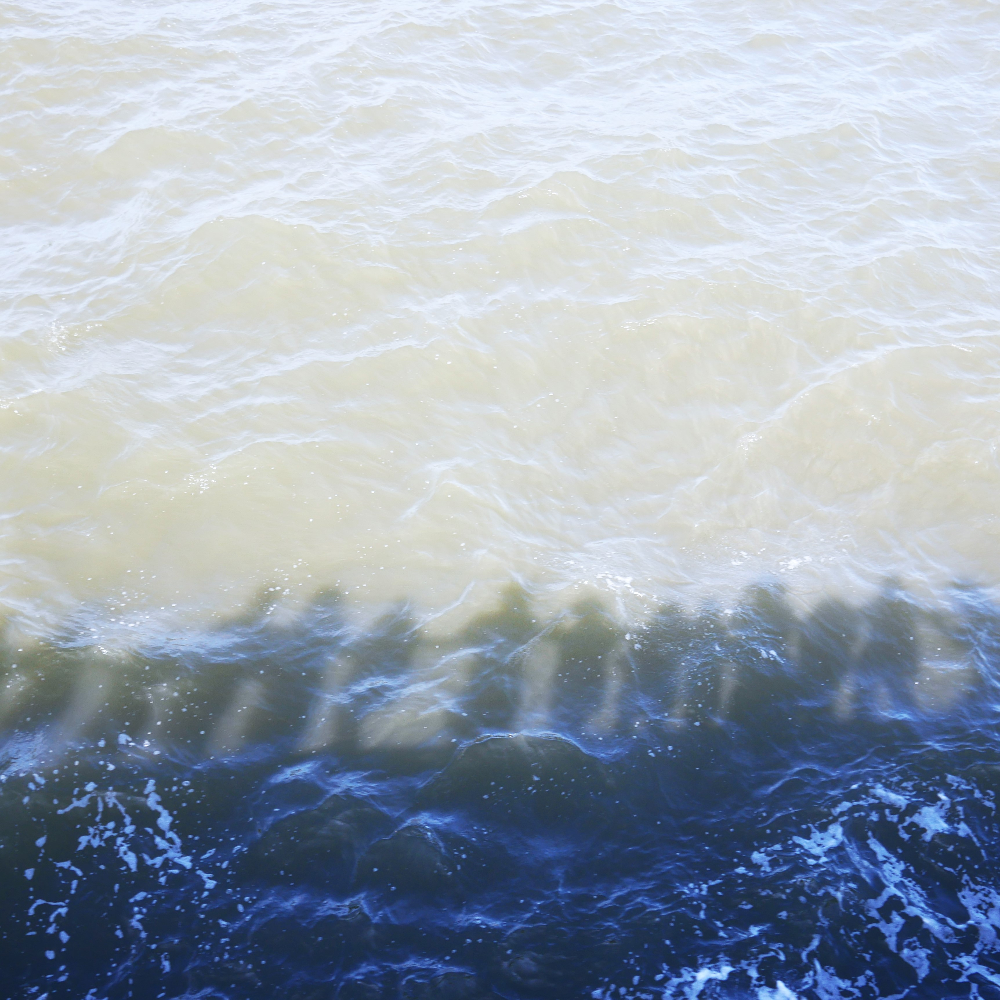

I am delighted to share that we have been awarded seed funding to establish a collaborative research project exploring youth suicide and self-harm research. Over the next year, our UCL team including Prof Alexandra Pitman, Dr Michelle Arellano Spano, and Alua Yeskendir, will work with a research team from Karolinska Institutet including Dr Jill Åhs, Dr Andreas Lundin, Dr Aemal Akhtar to build a cross-national collaboration.
Through in-person and online meetings, we will work together to co-produce long-term research priorities and coordinate efforts to develop funding applications. We will be hosting an event in October in Stockholm which will be open to other researchers interested in being involved, and will have a showcase of emerging research in London (spring 2026).
If you have questions or want to be involved, feel free to reach out to Jill (KI academic lead - jill.ahs@ki.se ) or Jen (UCL academic lead - j.dykxhoorn@ucl.ac.uk).
##Read more Read more about this funding on UCL News.